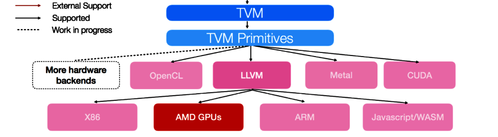

编译深度学习模型的快速入门教程#
作者: Yao Wang, Truman Tian
这个例子展示了如何用 Relay python 前端构建一个神经网络，并通过 TVM 为 Nvidia GPU 生成运行时库。注意，你需要在启用 cuda 和 llvm 的情况下构建 TVM。
支持的 TVM 硬件后端概述#
下图显示了 TVM 目前支持的硬件后端：

在本教程中，我们将选择 cuda 和 llvm 作为目标后端。首先，让我们导入 Relay 和 TVM。
from env import tvm
import numpy as np
from tvm import relay
from tvm.relay import testing
import tvm
from tvm import te
from tvm.contrib import graph_executor
import tvm.testing
在 Relay 中定义神经网络#
首先，让我们用 relay 的 python 前端定义一个神经网络。为了简单起见，我们将使用 Relay 中预先定义的 resnet-18 网络。参数用 Xavier 初始化器进行初始化。Relay 也支持其他模型格式，如 MXNet、CoreML、ONNX 和 Tensorflow。
在本教程中，假设我们将在我们的设备上进行推理，并且批量大小被设置为 1。输入图像是大小为 224*224 的 RGB 彩色图像。我们可以调用 tvm.relay.expr.TupleWrapper.astext() 来显示网络结构。
batch_size = 1
num_class = 1000
image_shape = (3, 224, 224)
data_shape = (batch_size,) + image_shape
out_shape = (batch_size, num_class)
mod, params = relay.testing.resnet.get_workload(
num_layers=18, batch_size=batch_size, image_shape=image_shape
)
# set show_meta_data=True if you want to show meta data
print(mod.astext(show_meta_data=False))
#[version = "0.0.5"]
def @main(%data: Tensor[(1, 3, 224, 224), float32], %bn_data_gamma: Tensor[(3), float32], %bn_data_beta: Tensor[(3), float32], %bn_data_moving_mean: Tensor[(3), float32], %bn_data_moving_var: Tensor[(3), float32], %conv0_weight: Tensor[(64, 3, 7, 7), float32], %bn0_gamma: Tensor[(64), float32], %bn0_beta: Tensor[(64), float32], %bn0_moving_mean: Tensor[(64), float32], %bn0_moving_var: Tensor[(64), float32], %stage1_unit1_bn1_gamma: Tensor[(64), float32], %stage1_unit1_bn1_beta: Tensor[(64), float32], %stage1_unit1_bn1_moving_mean: Tensor[(64), float32], %stage1_unit1_bn1_moving_var: Tensor[(64), float32], %stage1_unit1_conv1_weight: Tensor[(64, 64, 3, 3), float32], %stage1_unit1_bn2_gamma: Tensor[(64), float32], %stage1_unit1_bn2_beta: Tensor[(64), float32], %stage1_unit1_bn2_moving_mean: Tensor[(64), float32], %stage1_unit1_bn2_moving_var: Tensor[(64), float32], %stage1_unit1_conv2_weight: Tensor[(64, 64, 3, 3), float32], %stage1_unit1_sc_weight: Tensor[(64, 64, 1, 1), float32], %stage1_unit2_bn1_gamma: Tensor[(64), float32], %stage1_unit2_bn1_beta: Tensor[(64), float32], %stage1_unit2_bn1_moving_mean: Tensor[(64), float32], %stage1_unit2_bn1_moving_var: Tensor[(64), float32], %stage1_unit2_conv1_weight: Tensor[(64, 64, 3, 3), float32], %stage1_unit2_bn2_gamma: Tensor[(64), float32], %stage1_unit2_bn2_beta: Tensor[(64), float32], %stage1_unit2_bn2_moving_mean: Tensor[(64), float32], %stage1_unit2_bn2_moving_var: Tensor[(64), float32], %stage1_unit2_conv2_weight: Tensor[(64, 64, 3, 3), float32], %stage2_unit1_bn1_gamma: Tensor[(64), float32], %stage2_unit1_bn1_beta: Tensor[(64), float32], %stage2_unit1_bn1_moving_mean: Tensor[(64), float32], %stage2_unit1_bn1_moving_var: Tensor[(64), float32], %stage2_unit1_conv1_weight: Tensor[(128, 64, 3, 3), float32], %stage2_unit1_bn2_gamma: Tensor[(128), float32], %stage2_unit1_bn2_beta: Tensor[(128), float32], %stage2_unit1_bn2_moving_mean: Tensor[(128), float32], %stage2_unit1_bn2_moving_var: Tensor[(128), float32], %stage2_unit1_conv2_weight: Tensor[(128, 128, 3, 3), float32], %stage2_unit1_sc_weight: Tensor[(128, 64, 1, 1), float32], %stage2_unit2_bn1_gamma: Tensor[(128), float32], %stage2_unit2_bn1_beta: Tensor[(128), float32], %stage2_unit2_bn1_moving_mean: Tensor[(128), float32], %stage2_unit2_bn1_moving_var: Tensor[(128), float32], %stage2_unit2_conv1_weight: Tensor[(128, 128, 3, 3), float32], %stage2_unit2_bn2_gamma: Tensor[(128), float32], %stage2_unit2_bn2_beta: Tensor[(128), float32], %stage2_unit2_bn2_moving_mean: Tensor[(128), float32], %stage2_unit2_bn2_moving_var: Tensor[(128), float32], %stage2_unit2_conv2_weight: Tensor[(128, 128, 3, 3), float32], %stage3_unit1_bn1_gamma: Tensor[(128), float32], %stage3_unit1_bn1_beta: Tensor[(128), float32], %stage3_unit1_bn1_moving_mean: Tensor[(128), float32], %stage3_unit1_bn1_moving_var: Tensor[(128), float32], %stage3_unit1_conv1_weight: Tensor[(256, 128, 3, 3), float32], %stage3_unit1_bn2_gamma: Tensor[(256), float32], %stage3_unit1_bn2_beta: Tensor[(256), float32], %stage3_unit1_bn2_moving_mean: Tensor[(256), float32], %stage3_unit1_bn2_moving_var: Tensor[(256), float32], %stage3_unit1_conv2_weight: Tensor[(256, 256, 3, 3), float32], %stage3_unit1_sc_weight: Tensor[(256, 128, 1, 1), float32], %stage3_unit2_bn1_gamma: Tensor[(256), float32], %stage3_unit2_bn1_beta: Tensor[(256), float32], %stage3_unit2_bn1_moving_mean: Tensor[(256), float32], %stage3_unit2_bn1_moving_var: Tensor[(256), float32], %stage3_unit2_conv1_weight: Tensor[(256, 256, 3, 3), float32], %stage3_unit2_bn2_gamma: Tensor[(256), float32], %stage3_unit2_bn2_beta: Tensor[(256), float32], %stage3_unit2_bn2_moving_mean: Tensor[(256), float32], %stage3_unit2_bn2_moving_var: Tensor[(256), float32], %stage3_unit2_conv2_weight: Tensor[(256, 256, 3, 3), float32], %stage4_unit1_bn1_gamma: Tensor[(256), float32], %stage4_unit1_bn1_beta: Tensor[(256), float32], %stage4_unit1_bn1_moving_mean: Tensor[(256), float32], %stage4_unit1_bn1_moving_var: Tensor[(256), float32], %stage4_unit1_conv1_weight: Tensor[(512, 256, 3, 3), float32], %stage4_unit1_bn2_gamma: Tensor[(512), float32], %stage4_unit1_bn2_beta: Tensor[(512), float32], %stage4_unit1_bn2_moving_mean: Tensor[(512), float32], %stage4_unit1_bn2_moving_var: Tensor[(512), float32], %stage4_unit1_conv2_weight: Tensor[(512, 512, 3, 3), float32], %stage4_unit1_sc_weight: Tensor[(512, 256, 1, 1), float32], %stage4_unit2_bn1_gamma: Tensor[(512), float32], %stage4_unit2_bn1_beta: Tensor[(512), float32], %stage4_unit2_bn1_moving_mean: Tensor[(512), float32], %stage4_unit2_bn1_moving_var: Tensor[(512), float32], %stage4_unit2_conv1_weight: Tensor[(512, 512, 3, 3), float32], %stage4_unit2_bn2_gamma: Tensor[(512), float32], %stage4_unit2_bn2_beta: Tensor[(512), float32], %stage4_unit2_bn2_moving_mean: Tensor[(512), float32], %stage4_unit2_bn2_moving_var: Tensor[(512), float32], %stage4_unit2_conv2_weight: Tensor[(512, 512, 3, 3), float32], %bn1_gamma: Tensor[(512), float32], %bn1_beta: Tensor[(512), float32], %bn1_moving_mean: Tensor[(512), float32], %bn1_moving_var: Tensor[(512), float32], %fc1_weight: Tensor[(1000, 512), float32], %fc1_bias: Tensor[(1000), float32]) -> Tensor[(1, 1000), float32] {
%0 = nn.batch_norm(%data, %bn_data_gamma, %bn_data_beta, %bn_data_moving_mean, %bn_data_moving_var, epsilon=2e-05f, scale=False) /* ty=(Tensor[(1, 3, 224, 224), float32], Tensor[(3), float32], Tensor[(3), float32]) */;
%1 = %0.0;
%2 = nn.conv2d(%1, %conv0_weight, strides=[2, 2], padding=[3, 3, 3, 3], channels=64, kernel_size=[7, 7]) /* ty=Tensor[(1, 64, 112, 112), float32] */;
%3 = nn.batch_norm(%2, %bn0_gamma, %bn0_beta, %bn0_moving_mean, %bn0_moving_var, epsilon=2e-05f) /* ty=(Tensor[(1, 64, 112, 112), float32], Tensor[(64), float32], Tensor[(64), float32]) */;
%4 = %3.0;
%5 = nn.relu(%4) /* ty=Tensor[(1, 64, 112, 112), float32] */;
%6 = nn.max_pool2d(%5, pool_size=[3, 3], strides=[2, 2], padding=[1, 1, 1, 1]) /* ty=Tensor[(1, 64, 56, 56), float32] */;
%7 = nn.batch_norm(%6, %stage1_unit1_bn1_gamma, %stage1_unit1_bn1_beta, %stage1_unit1_bn1_moving_mean, %stage1_unit1_bn1_moving_var, epsilon=2e-05f) /* ty=(Tensor[(1, 64, 56, 56), float32], Tensor[(64), float32], Tensor[(64), float32]) */;
%8 = %7.0;
%9 = nn.relu(%8) /* ty=Tensor[(1, 64, 56, 56), float32] */;
%10 = nn.conv2d(%9, %stage1_unit1_conv1_weight, padding=[1, 1, 1, 1], channels=64, kernel_size=[3, 3]) /* ty=Tensor[(1, 64, 56, 56), float32] */;
%11 = nn.batch_norm(%10, %stage1_unit1_bn2_gamma, %stage1_unit1_bn2_beta, %stage1_unit1_bn2_moving_mean, %stage1_unit1_bn2_moving_var, epsilon=2e-05f) /* ty=(Tensor[(1, 64, 56, 56), float32], Tensor[(64), float32], Tensor[(64), float32]) */;
%12 = %11.0;
%13 = nn.relu(%12) /* ty=Tensor[(1, 64, 56, 56), float32] */;
%14 = nn.conv2d(%13, %stage1_unit1_conv2_weight, padding=[1, 1, 1, 1], channels=64, kernel_size=[3, 3]) /* ty=Tensor[(1, 64, 56, 56), float32] */;
%15 = nn.conv2d(%9, %stage1_unit1_sc_weight, padding=[0, 0, 0, 0], channels=64, kernel_size=[1, 1]) /* ty=Tensor[(1, 64, 56, 56), float32] */;
%16 = add(%14, %15) /* ty=Tensor[(1, 64, 56, 56), float32] */;
%17 = nn.batch_norm(%16, %stage1_unit2_bn1_gamma, %stage1_unit2_bn1_beta, %stage1_unit2_bn1_moving_mean, %stage1_unit2_bn1_moving_var, epsilon=2e-05f) /* ty=(Tensor[(1, 64, 56, 56), float32], Tensor[(64), float32], Tensor[(64), float32]) */;
%18 = %17.0;
%19 = nn.relu(%18) /* ty=Tensor[(1, 64, 56, 56), float32] */;
%20 = nn.conv2d(%19, %stage1_unit2_conv1_weight, padding=[1, 1, 1, 1], channels=64, kernel_size=[3, 3]) /* ty=Tensor[(1, 64, 56, 56), float32] */;
%21 = nn.batch_norm(%20, %stage1_unit2_bn2_gamma, %stage1_unit2_bn2_beta, %stage1_unit2_bn2_moving_mean, %stage1_unit2_bn2_moving_var, epsilon=2e-05f) /* ty=(Tensor[(1, 64, 56, 56), float32], Tensor[(64), float32], Tensor[(64), float32]) */;
%22 = %21.0;
%23 = nn.relu(%22) /* ty=Tensor[(1, 64, 56, 56), float32] */;
%24 = nn.conv2d(%23, %stage1_unit2_conv2_weight, padding=[1, 1, 1, 1], channels=64, kernel_size=[3, 3]) /* ty=Tensor[(1, 64, 56, 56), float32] */;
%25 = add(%24, %16) /* ty=Tensor[(1, 64, 56, 56), float32] */;
%26 = nn.batch_norm(%25, %stage2_unit1_bn1_gamma, %stage2_unit1_bn1_beta, %stage2_unit1_bn1_moving_mean, %stage2_unit1_bn1_moving_var, epsilon=2e-05f) /* ty=(Tensor[(1, 64, 56, 56), float32], Tensor[(64), float32], Tensor[(64), float32]) */;
%27 = %26.0;
%28 = nn.relu(%27) /* ty=Tensor[(1, 64, 56, 56), float32] */;
%29 = nn.conv2d(%28, %stage2_unit1_conv1_weight, strides=[2, 2], padding=[1, 1, 1, 1], channels=128, kernel_size=[3, 3]) /* ty=Tensor[(1, 128, 28, 28), float32] */;
%30 = nn.batch_norm(%29, %stage2_unit1_bn2_gamma, %stage2_unit1_bn2_beta, %stage2_unit1_bn2_moving_mean, %stage2_unit1_bn2_moving_var, epsilon=2e-05f) /* ty=(Tensor[(1, 128, 28, 28), float32], Tensor[(128), float32], Tensor[(128), float32]) */;
%31 = %30.0;
%32 = nn.relu(%31) /* ty=Tensor[(1, 128, 28, 28), float32] */;
%33 = nn.conv2d(%32, %stage2_unit1_conv2_weight, padding=[1, 1, 1, 1], channels=128, kernel_size=[3, 3]) /* ty=Tensor[(1, 128, 28, 28), float32] */;
%34 = nn.conv2d(%28, %stage2_unit1_sc_weight, strides=[2, 2], padding=[0, 0, 0, 0], channels=128, kernel_size=[1, 1]) /* ty=Tensor[(1, 128, 28, 28), float32] */;
%35 = add(%33, %34) /* ty=Tensor[(1, 128, 28, 28), float32] */;
%36 = nn.batch_norm(%35, %stage2_unit2_bn1_gamma, %stage2_unit2_bn1_beta, %stage2_unit2_bn1_moving_mean, %stage2_unit2_bn1_moving_var, epsilon=2e-05f) /* ty=(Tensor[(1, 128, 28, 28), float32], Tensor[(128), float32], Tensor[(128), float32]) */;
%37 = %36.0;
%38 = nn.relu(%37) /* ty=Tensor[(1, 128, 28, 28), float32] */;
%39 = nn.conv2d(%38, %stage2_unit2_conv1_weight, padding=[1, 1, 1, 1], channels=128, kernel_size=[3, 3]) /* ty=Tensor[(1, 128, 28, 28), float32] */;
%40 = nn.batch_norm(%39, %stage2_unit2_bn2_gamma, %stage2_unit2_bn2_beta, %stage2_unit2_bn2_moving_mean, %stage2_unit2_bn2_moving_var, epsilon=2e-05f) /* ty=(Tensor[(1, 128, 28, 28), float32], Tensor[(128), float32], Tensor[(128), float32]) */;
%41 = %40.0;
%42 = nn.relu(%41) /* ty=Tensor[(1, 128, 28, 28), float32] */;
%43 = nn.conv2d(%42, %stage2_unit2_conv2_weight, padding=[1, 1, 1, 1], channels=128, kernel_size=[3, 3]) /* ty=Tensor[(1, 128, 28, 28), float32] */;
%44 = add(%43, %35) /* ty=Tensor[(1, 128, 28, 28), float32] */;
%45 = nn.batch_norm(%44, %stage3_unit1_bn1_gamma, %stage3_unit1_bn1_beta, %stage3_unit1_bn1_moving_mean, %stage3_unit1_bn1_moving_var, epsilon=2e-05f) /* ty=(Tensor[(1, 128, 28, 28), float32], Tensor[(128), float32], Tensor[(128), float32]) */;
%46 = %45.0;
%47 = nn.relu(%46) /* ty=Tensor[(1, 128, 28, 28), float32] */;
%48 = nn.conv2d(%47, %stage3_unit1_conv1_weight, strides=[2, 2], padding=[1, 1, 1, 1], channels=256, kernel_size=[3, 3]) /* ty=Tensor[(1, 256, 14, 14), float32] */;
%49 = nn.batch_norm(%48, %stage3_unit1_bn2_gamma, %stage3_unit1_bn2_beta, %stage3_unit1_bn2_moving_mean, %stage3_unit1_bn2_moving_var, epsilon=2e-05f) /* ty=(Tensor[(1, 256, 14, 14), float32], Tensor[(256), float32], Tensor[(256), float32]) */;
%50 = %49.0;
%51 = nn.relu(%50) /* ty=Tensor[(1, 256, 14, 14), float32] */;
%52 = nn.conv2d(%51, %stage3_unit1_conv2_weight, padding=[1, 1, 1, 1], channels=256, kernel_size=[3, 3]) /* ty=Tensor[(1, 256, 14, 14), float32] */;
%53 = nn.conv2d(%47, %stage3_unit1_sc_weight, strides=[2, 2], padding=[0, 0, 0, 0], channels=256, kernel_size=[1, 1]) /* ty=Tensor[(1, 256, 14, 14), float32] */;
%54 = add(%52, %53) /* ty=Tensor[(1, 256, 14, 14), float32] */;
%55 = nn.batch_norm(%54, %stage3_unit2_bn1_gamma, %stage3_unit2_bn1_beta, %stage3_unit2_bn1_moving_mean, %stage3_unit2_bn1_moving_var, epsilon=2e-05f) /* ty=(Tensor[(1, 256, 14, 14), float32], Tensor[(256), float32], Tensor[(256), float32]) */;
%56 = %55.0;
%57 = nn.relu(%56) /* ty=Tensor[(1, 256, 14, 14), float32] */;
%58 = nn.conv2d(%57, %stage3_unit2_conv1_weight, padding=[1, 1, 1, 1], channels=256, kernel_size=[3, 3]) /* ty=Tensor[(1, 256, 14, 14), float32] */;
%59 = nn.batch_norm(%58, %stage3_unit2_bn2_gamma, %stage3_unit2_bn2_beta, %stage3_unit2_bn2_moving_mean, %stage3_unit2_bn2_moving_var, epsilon=2e-05f) /* ty=(Tensor[(1, 256, 14, 14), float32], Tensor[(256), float32], Tensor[(256), float32]) */;
%60 = %59.0;
%61 = nn.relu(%60) /* ty=Tensor[(1, 256, 14, 14), float32] */;
%62 = nn.conv2d(%61, %stage3_unit2_conv2_weight, padding=[1, 1, 1, 1], channels=256, kernel_size=[3, 3]) /* ty=Tensor[(1, 256, 14, 14), float32] */;
%63 = add(%62, %54) /* ty=Tensor[(1, 256, 14, 14), float32] */;
%64 = nn.batch_norm(%63, %stage4_unit1_bn1_gamma, %stage4_unit1_bn1_beta, %stage4_unit1_bn1_moving_mean, %stage4_unit1_bn1_moving_var, epsilon=2e-05f) /* ty=(Tensor[(1, 256, 14, 14), float32], Tensor[(256), float32], Tensor[(256), float32]) */;
%65 = %64.0;
%66 = nn.relu(%65) /* ty=Tensor[(1, 256, 14, 14), float32] */;
%67 = nn.conv2d(%66, %stage4_unit1_conv1_weight, strides=[2, 2], padding=[1, 1, 1, 1], channels=512, kernel_size=[3, 3]) /* ty=Tensor[(1, 512, 7, 7), float32] */;
%68 = nn.batch_norm(%67, %stage4_unit1_bn2_gamma, %stage4_unit1_bn2_beta, %stage4_unit1_bn2_moving_mean, %stage4_unit1_bn2_moving_var, epsilon=2e-05f) /* ty=(Tensor[(1, 512, 7, 7), float32], Tensor[(512), float32], Tensor[(512), float32]) */;
%69 = %68.0;
%70 = nn.relu(%69) /* ty=Tensor[(1, 512, 7, 7), float32] */;
%71 = nn.conv2d(%70, %stage4_unit1_conv2_weight, padding=[1, 1, 1, 1], channels=512, kernel_size=[3, 3]) /* ty=Tensor[(1, 512, 7, 7), float32] */;
%72 = nn.conv2d(%66, %stage4_unit1_sc_weight, strides=[2, 2], padding=[0, 0, 0, 0], channels=512, kernel_size=[1, 1]) /* ty=Tensor[(1, 512, 7, 7), float32] */;
%73 = add(%71, %72) /* ty=Tensor[(1, 512, 7, 7), float32] */;
%74 = nn.batch_norm(%73, %stage4_unit2_bn1_gamma, %stage4_unit2_bn1_beta, %stage4_unit2_bn1_moving_mean, %stage4_unit2_bn1_moving_var, epsilon=2e-05f) /* ty=(Tensor[(1, 512, 7, 7), float32], Tensor[(512), float32], Tensor[(512), float32]) */;
%75 = %74.0;
%76 = nn.relu(%75) /* ty=Tensor[(1, 512, 7, 7), float32] */;
%77 = nn.conv2d(%76, %stage4_unit2_conv1_weight, padding=[1, 1, 1, 1], channels=512, kernel_size=[3, 3]) /* ty=Tensor[(1, 512, 7, 7), float32] */;
%78 = nn.batch_norm(%77, %stage4_unit2_bn2_gamma, %stage4_unit2_bn2_beta, %stage4_unit2_bn2_moving_mean, %stage4_unit2_bn2_moving_var, epsilon=2e-05f) /* ty=(Tensor[(1, 512, 7, 7), float32], Tensor[(512), float32], Tensor[(512), float32]) */;
%79 = %78.0;
%80 = nn.relu(%79) /* ty=Tensor[(1, 512, 7, 7), float32] */;
%81 = nn.conv2d(%80, %stage4_unit2_conv2_weight, padding=[1, 1, 1, 1], channels=512, kernel_size=[3, 3]) /* ty=Tensor[(1, 512, 7, 7), float32] */;
%82 = add(%81, %73) /* ty=Tensor[(1, 512, 7, 7), float32] */;
%83 = nn.batch_norm(%82, %bn1_gamma, %bn1_beta, %bn1_moving_mean, %bn1_moving_var, epsilon=2e-05f) /* ty=(Tensor[(1, 512, 7, 7), float32], Tensor[(512), float32], Tensor[(512), float32]) */;
%84 = %83.0;
%85 = nn.relu(%84) /* ty=Tensor[(1, 512, 7, 7), float32] */;
%86 = nn.global_avg_pool2d(%85) /* ty=Tensor[(1, 512, 1, 1), float32] */;
%87 = nn.batch_flatten(%86) /* ty=Tensor[(1, 512), float32] */;
%88 = nn.dense(%87, %fc1_weight, units=1000) /* ty=Tensor[(1, 1000), float32] */;
%89 = nn.bias_add(%88, %fc1_bias, axis=-1) /* ty=Tensor[(1, 1000), float32] */;
nn.softmax(%89) /* ty=Tensor[(1, 1000), float32] */
}
编译#
下一步是使用 Relay/TVM 管道对模型进行编译。用户可以指定编译的优化级别。目前这个值可以是 0 到 3。优化 passes 包括运算符融合（operator fusion）、预计算（pre-computation）、布局转换（layout transformation）等。
relay.build() 返回三个部分：json 格式的执行图，TVM 模块库中专门为这个图在目标硬件上编译的函数，以及模型的参数 blobs。在编译过程中，Relay 做了图层面的优化，而 TVM 做了张量层面的优化，从而产生了一个优化的运行模块为模型服务。
我们将首先为 Nvidia GPU 进行编译。在幕后， relay.build() 首先做了一些图层面的优化，例如修剪（pruning）、融合（fusing）等，然后将运算符（即优化后的图的节点）注册到 TVM 实现中，生成 tvm.module。为了生成模块库，TVM 将首先把高层 IR 转移到指定目标后端的低层内在 IR 中，在这个例子中是 CUDA。然后机器代码将被生成为模块库。
opt_level = 3
target = tvm.target.cuda()
with tvm.transform.PassContext(opt_level=opt_level):
lib = relay.build(mod, target, params=params)
/media/pc/data/4tb/lxw/study/tvm/python/tvm/target/target.py:288: UserWarning: Try specifying cuda arch by adding 'arch=sm_xx' to your target.
warnings.warn("Try specifying cuda arch by adding 'arch=sm_xx' to your target.")
One or more operators have not been tuned. Please tune your model for better performance. Use DEBUG logging level to see more details.
运行生成库#
现在我们可以创建图执行器并在 Nvidia GPU 上运行该模块。
# create random input
dev = tvm.cuda()
data = np.random.uniform(-1, 1, size=data_shape).astype("float32")
# create module
module = graph_executor.GraphModule(lib["default"](dev))
# set input and parameters
module.set_input("data", data)
# run
module.run()
# get output
out = module.get_output(0, tvm.nd.empty(out_shape)).numpy()
# Print first 10 elements of output
print(out.flatten()[0:10])
[0.00089283 0.00103331 0.0009094 0.00102275 0.00108751 0.00106737
0.00106262 0.00095838 0.00110792 0.00113151]
保存和加载已编译的模块#
我们也可以将 graph、lib 和参数保存到文件中，并在部署环境中加载它们。
# save the graph, lib and params into separate files
from tvm.contrib import utils
temp = utils.tempdir()
path_lib = temp.relpath("deploy_lib.tar")
lib.export_library(path_lib)
print(temp.listdir())
['deploy_lib.tar']
# load the module back.
loaded_lib = tvm.runtime.load_module(path_lib)
input_data = tvm.nd.array(data)
module = graph_executor.GraphModule(loaded_lib["default"](dev))
module.run(data=input_data)
out_deploy = module.get_output(0).numpy()
# Print first 10 elements of output
print(out_deploy.flatten()[0:10])
# check whether the output from deployed module is consistent with original one
tvm.testing.assert_allclose(out_deploy, out, atol=1e-5)
[0.00089283 0.00103331 0.0009094 0.00102275 0.00108751 0.00106737
0.00106262 0.00095838 0.00110792 0.00113151]